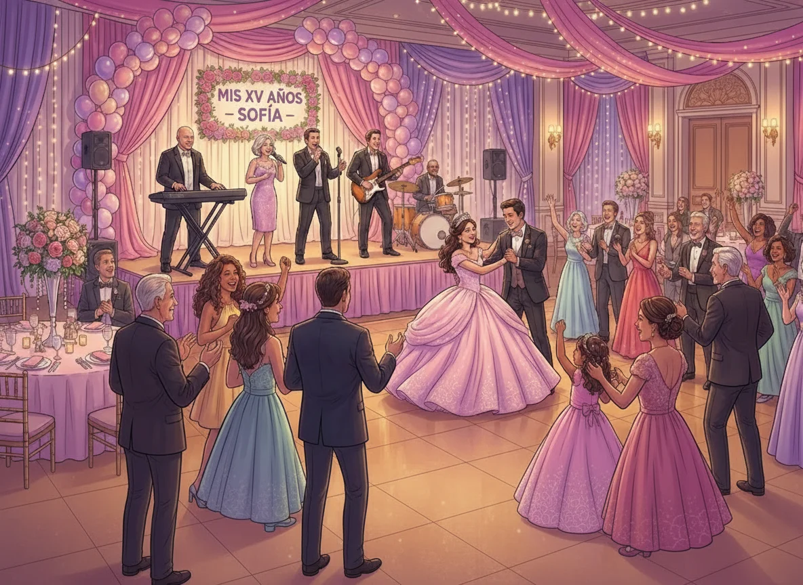

La música en unos XV años no es un elemento secundario. Es el hilo conductor que estructura el evento, marca las transiciones emocionales y define la experiencia de la quinceañera y sus invitados. Desde la recepción hasta el cierre de la fiesta, cada momento requiere una selección musical específica y una coordinación precisa.
En la Ciudad de México, donde los XV años mantienen una tradición sólida con protocolos bien definidos, la música debe adaptarse a cada fase sin perder coherencia ni calidad. Este artículo ofrece una guía práctica para planear la música en cada momento del evento con criterios profesionales.
Momentos clave de unos XV años
Un evento de XV años típico en la CDMX se estructura en fases claramente diferenciadas, cada una con requerimientos musicales específicos:
- Recepción: Música de fondo mientras los invitados llegan y se acomodan
- Entrada de la quinceañera: Momento protocolar con música emotiva y solemne
- Vals: El momento más emblemático, requiere ejecución impecable
- Cena: Música de fondo que permita conversación
- Fiesta y baile: Música enérgica y variada para todas las edades
- Cierre: Canciones finales que marquen el término del evento
Recepción: Creando la atmósfera inicial
La recepción es el momento donde los invitados llegan, se registran y se acomodan. La música debe ser elegante pero discreta, creando ambiente sin interferir con las conversaciones.
Repertorio recomendado:
- Música instrumental suave (piano, cuerdas, jazz)
- Baladas clásicas en versión instrumental
- Bossa nova o música lounge
- Pop suave en versión acústica
Formato musical: El grupo versátil puede funcionar en formación reducida (solista con tecladista) durante esta fase, optimizando recursos sin comprometer calidad.
Entrada de la quinceañera: El momento protocolar
La entrada de la quinceañera es uno de los momentos más emotivos del evento. La música debe ser solemne, emotiva y ejecutada con precisión.
Opciones musicales:
- Música clásica (Canon de Pachelbel, Ave María)
- Baladas emotivas seleccionadas por la quinceañera
- Música instrumental con arreglos especiales
Coordinación: Es fundamental que el grupo musical tenga señal clara del momento exacto de inicio. El líder tecladista debe estar en comunicación directa con el coordinador del evento.
Vals: El momento más emblemático
El vals es el momento central de los XV años. Requiere ejecución musical impecable, tempo preciso y capacidad de adaptación en tiempo real.
Consideraciones técnicas:
- Tempo estable y adecuado para bailar (aproximadamente 60 BPM para vals tradicional)
- Arreglo musical que permita las coreografías planeadas
- Capacidad de extender o acortar la canción según la duración del baile
- Transiciones suaves entre diferentes secciones del vals
Repertorio común:
- Vals tradicionales (Danubio Azul, Sobre las Olas)
- Canciones populares adaptadas a tempo de vals
- Medleys de vals con diferentes canciones
El líder tecladista experto es fundamental en este momento, ya que puede ajustar el tempo, extender secciones y adaptarse a las necesidades de la coreografía en tiempo real.
Cena: Música de fondo funcional
Durante la cena, la música debe ser suficientemente presente para crear ambiente, pero lo suficientemente discreta para permitir conversaciones.
Repertorio recomendado:
- Baladas suaves en español e inglés
- Música romántica instrumental
- Pop suave y clásicos en versión acústica
Volumen: Debe permitir conversación sin esfuerzo. El grupo musical debe ajustar niveles según la acústica del salón.
Fiesta y baile: Energía y versatilidad
La fase de fiesta es donde el grupo versátil demuestra su capacidad de adaptación. Debe cubrir géneros variados para todas las edades de los invitados.
Géneros recomendados:
- Cumbia y música tropical
- Salsa y música latina
- Pop y rock en español e inglés
- Reggaetón y música urbana actual
- Música regional mexicana
Estrategia: Alternar géneros para mantener a todos los invitados participando. El grupo debe leer la respuesta del público y ajustar el repertorio en tiempo real.
Coordinación musical: Checklist completo
- ☐ Reunión previa con el grupo musical para definir repertorio completo
- ☐ Confirmar canciones específicas para entrada, vals y momentos protocolarios
- ☐ Establecer señales de coordinación para cada momento clave
- ☐ Designar un coordinador del evento con comunicación directa con el líder del grupo
- ☐ Confirmar tiempos de montaje y prueba de sonido
- ☐ Verificar que el grupo tenga equipo de audio adecuado para el tamaño del salón
- ☐ Confirmar capacidad del grupo para adaptarse a solicitudes en tiempo real
- ☐ Establecer plan de contingencia para problemas técnicos
Errores comunes en la música de XV años
- No definir claramente las canciones para momentos protocolarios
- No coordinar señales de inicio para entrada y vals
- Elegir un grupo sin experiencia en eventos de XV años
- No realizar prueba de sonido con anticipación
- No considerar el perfil de edad de los invitados en el repertorio
Preguntas frecuentes
¿El grupo musical puede tocar cualquier canción para el vals?
Un grupo versátil profesional puede adaptar la mayoría de canciones populares a tempo de vals, pero es importante confirmar con anticipación y, si es posible, escuchar un demo del arreglo.
¿Cuánto tiempo debe durar el vals?
Típicamente entre 3 y 5 minutos, dependiendo de la coreografía. El grupo debe tener capacidad de extender o acortar la canción según sea necesario.
¿Es necesario un ensayo previo con el grupo musical?
Para el vals, si hay coreografía compleja, es recomendable al menos una coordinación previa para confirmar tiempos y transiciones.
¿Qué formato musical es mejor para XV años?
El grupo versátil universal es la opción más eficiente, ya que puede cubrir desde momentos protocolarios hasta la fiesta completa con un solo proveedor.
Planear la música para cada momento de unos XV años en la CDMX requiere coordinación profesional, repertorio adecuado y capacidad de adaptación en tiempo real. El formato de grupo versátil universal, liderado por un tecladista experto, ofrece la solución más completa para garantizar el éxito musical en todas las fases del evento.